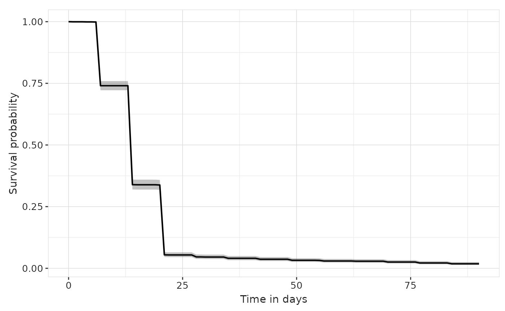
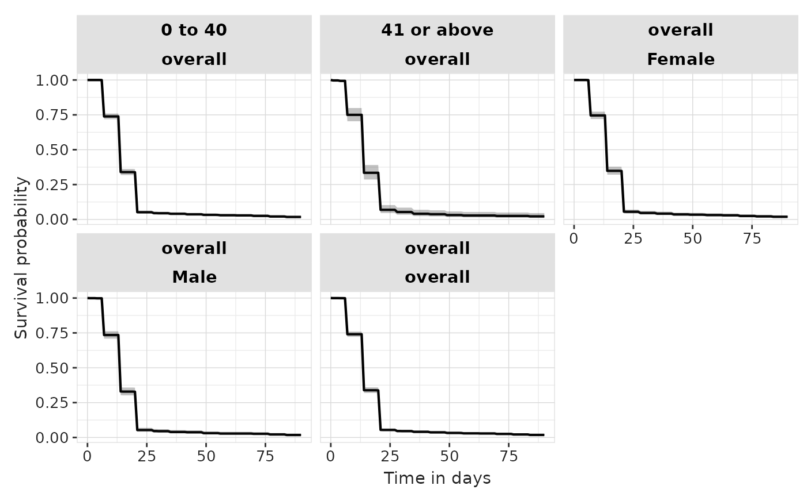

Summarising treatment adherence
Source:vignettes/treatment_discontinuation.Rmd
treatment_discontinuation.RmdIntroduction
In this vignette we will go through two common approaches for assessing treatment adherence that can be performed after creating drug cohorts. The first approach is to assess time-to-discontinuation using survival methods, while the second is to estimate the proportion of patients covered.
Adherence to amoxicillin
For example, let’s say we would like to study adherence among new users of amoxicillin over the first 90-days of use. For this we can first create our amoxicillin study cohort. Here we’ll use the synthetic Eunomia dataset to show how this could be done.
library(DrugUtilisation)
library(omock)
library(CohortSurvival)
library(PatientProfiles)
cdm <- mockCdmFromDataset(datasetName = "GiBleed", source = "duckdb")
cdm <- generateIngredientCohortSet(
cdm = cdm,
name = "amoxicillin",
ingredient = "amoxicillin",
gapEra = 7
)Time-to-discontinuation
We can estimate Kaplan-Meier survival curves we can use estimateSingleEventSurvival from the CohortSurvival package, with the follow-up beginning from an individual’s cohort start date and discontinuation occurring at their cohort end date. As the outcome washout is set to Inf we’ll only be considering the first cohort entry for an individual. It is important to note that because the survival analysis is focused on a single cohort entry, with the cohort end date taken to indicate treatment discontinuation, the gap era used above when creating the drug cohort can often have an important impact on the results.
discontinuationSummary <- estimateSingleEventSurvival(
cdm = cdm,
targetCohortTable = "amoxicillin",
outcomeCohortTable = "amoxicillin",
outcomeDateVariable = "cohort_end_date",
outcomeWashout = Inf,
followUpDays = 90,
eventGap = 30
)We can plot our study result like so:
plotSurvival(discontinuationSummary)
Or we can similarly create a table summarising the result
tableSurvival(discontinuationSummary)| CDM name | Target cohort | Outcome name |
Estimate name
|
|||
|---|---|---|---|---|---|---|
| Number records | Number events | Median survival (95% CI) | Restricted mean survival (95% CI) | |||
| GiBleed | amoxicillin | amoxicillin | 2,126 | 2,087 | 14.00 (14.00, 14.00) | 17.00 (16.00, 17.00) |
We can also easily stratify our results. Here we add patient demographics to our cohort table using the PatientProfiles packages and then stratify results by age group and sex.
cdm$amoxicillin <- cdm$amoxicillin |>
addDemographics(
ageGroup = list(c(0, 40), c(41, Inf)),
name = "amoxicillin"
)
discontinuationSummary <- estimateSingleEventSurvival(
cdm = cdm,
strata = list(c("age_group"), c("sex")),
targetCohortTable = "amoxicillin",
outcomeCohortTable = "amoxicillin",
outcomeDateVariable = "cohort_end_date",
followUpDays = 90,
eventGap = 30
)Again we could present our results in a plot or a table.
plotSurvival(discontinuationSummary, facet = c("age_group", "sex"))
tableSurvival(discontinuationSummary)| CDM name | Target cohort | Age group | Sex | Outcome name |
Estimate name
|
|||
|---|---|---|---|---|---|---|---|---|
| Number records | Number events | Median survival (95% CI) | Restricted mean survival (95% CI) | |||||
| GiBleed | amoxicillin | overall | overall | amoxicillin | 2,126 | 2,087 | 14.00 (14.00, 14.00) | 17.00 (16.00, 17.00) |
| 0 to 40 | overall | amoxicillin | 1,806 | 1,774 | 14.00 (14.00, 14.00) | 17.00 (16.00, 17.00) | ||
| 41 or above | overall | amoxicillin | 320 | 313 | 14.00 (14.00, 14.00) | 17.00 (16.00, 19.00) | ||
| overall | Female | amoxicillin | 1,059 | 1,039 | 14.00 (14.00, 14.00) | 17.00 (16.00, 18.00) | ||
| Male | amoxicillin | 1,067 | 1,048 | 14.00 (14.00, 14.00) | 17.00 (16.00, 18.00) | |||
Proportion of patients covered
Estimating the proportion of amoxicillin patients covered offers an alternative approach for describing treatment adherence. Here for each day following initiation (taken as the first cohort entry for an individual) we estimate the proportion of patients that have an ongoing cohort entry among those who are still in observation at that time. Unlike with the time-to-discontinuation approach shown above, estimating proportion of patients covered allows for individuals to have re-initiate the drug after some break. Consequently this method is typically far less sensitive to the choice of gap era used when creating the drug cohort.
ppcSummary <- cdm$amoxicillin |>
summariseProportionOfPatientsCovered(followUpDays = 90)Like with our survival estimates, we can quickly create a plot of our results
plotProportionOfPatientsCovered(ppcSummary)
Similarly, we can also stratify our results in a similar way.
ppcSummary <- cdm$amoxicillin |>
summariseProportionOfPatientsCovered(
strata = list(c("age_group"), c("sex")),
followUpDays = 90
)
plotProportionOfPatientsCovered(ppcSummary, facet = c("sex", "age_group"))